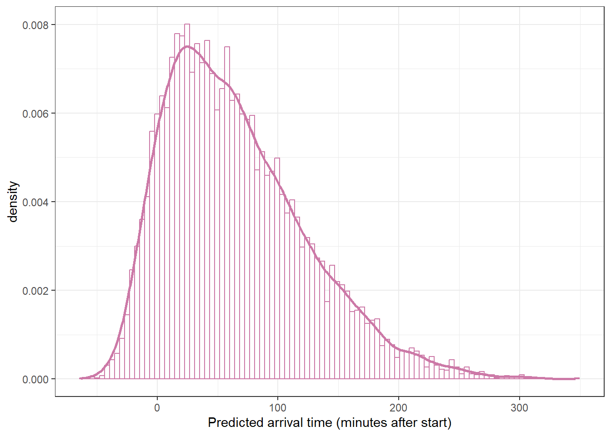

Example 19.1 How late do people arrive at parties? FiveThirtyEight conducted a survey to address this question. We’ll assume this is a reasonably representative sample and arrival times are measured reliably. Arrival times are measured in minutes after the scheduled start time, rounded to the nearest minute. (Negative arrival times represent arrivals before the scheduled start time.)
What would you expect the population distribution of party arrival times to look like? For example, what percent of arrivals would you expect to be early (negative)? Later than two hours? What would you expect of other features like shape, center, and variability?
We will start by assuming that, given the values of relevant parameters, arrival times follow a conditional Normal distribution. Describe what this assumption says about arrival times. What are the relevant parameters, and what do they represent? (We will revisit this conditional Normal assumption later, but go with it for now.)
Suggest a prior distribution. Explain your reasoning.
Describe how you could simulate the prior predictive distribution.
This applet conducts the simulation from the previous part. Move the sliders to enter your prior mean and SD for \(\mu\) and \(\sigma\). Does the distribution of arrival times seem reasonable based on your expectations? For example, what percent of arrivals are early (negative), or later than two hours — and do these values seem reasonable? If not, revise your assumptions and try again (i.e., play with the sliders in the applet) until you find a distribution that is reasonable. Do not worry about getting it perfect; you just want to settle on assumptions that provide a reasonable starting point. (The assumptions include both the conditional Normal model for arrival times and the prior distribution of parameters. For now we are focusing on the prior distribution, so take the conditional Normal model as given. We’ll revisit that assumption later.)
Example 19.2Section 19.1.2 summarizes the FiveThirtyEight sample1 of 803 arrival times (rounded to the nearest minute).
We should always first explore the sample data, but to illustrate a point we will not do that yet. Instead, we’ll skip straight to fitting the model.
Use brms to fit the model and summarize the posterior distribution. Briefly describe the posterior distribution.
Simulate the posterior predictive distribution. Briefly describe the posterior predictive distribution.
Perform a visual posterior predictive check. What does the posterior predictive check say about the appropriateness of our model? Could any problems be fixed by switching from a Normal to a \(t\) likelihood?
Example 19.3 The sample data suggests a model that allows for skewness would be more appropriate than Normal. This primarily results in a change of the likelihood function. There are several likelihood functions we can use, but we’ll try a Skew Normal family, which introduces an additional skewness parameter \(\alpha\). Since \(\alpha\) is a parameter it also needs a prior distribution. Rather than redoing our prior predictive tuning, we’ll rely on the fact that software packages like brms can utilize default priors.
Use brms to fit the skew Normal model, letting brms choose the prior for \(\alpha\) (but specifying the priors for \(\mu\) and \(\sigma\) as before). What prior does brms use?
Summarize and describe the posterior distribution.
Use simulation to approximate the posterior predictive distribution. Summarize and describe the posterior predictive distribution.
Perform a visual posterior predictive check. What does the posterior predictive check say about the appropriateness of the model? Which model seems to be a better fit for the data: likelihood based on Normal or Skew-Normal?
Fit the model to the data in brms using the skew_normal family but letting brms choose the prior for all parameters. What prior does brms choose? Is the posterior sensitive to the choice of prior?
Are the posterior distributions of parameters skewed or relatively symmetric? Is the posterior predictive distribution skewed or relatively symmetric?
Write a few sentences summarizing the conclusions of the Bayesian model in context.
19.1 Notes
19.1.1 Prior predictive distribution (Normal likelihood)
Rows: 803 Columns: 1
── Column specification ────────────────────────────────────────────────────────
Delimiter: ","
dbl (1): minutes
ℹ Use `spec()` to retrieve the full column specification for this data.
ℹ Specify the column types or set `show_col_types = FALSE` to quiet this message.
Warning: package 'brms' was built under R version 4.3.3
Loading required package: Rcpp
Warning: package 'Rcpp' was built under R version 4.3.3
Loading 'brms' package (version 2.22.0). Useful instructions
can be found by typing help('brms'). A more detailed introduction
to the package is available through vignette('brms_overview').
Attaching package: 'brms'
The following object is masked from 'package:stats':
ar
library(tidybayes)
Warning: package 'tidybayes' was built under R version 4.3.3
Attaching package: 'tidybayes'
The following objects are masked from 'package:brms':
dstudent_t, pstudent_t, qstudent_t, rstudent_t
library(bayesplot)
Warning: package 'bayesplot' was built under R version 4.3.3
This is bayesplot version 1.11.1
- Online documentation and vignettes at mc-stan.org/bayesplot
- bayesplot theme set to bayesplot::theme_default()
* Does _not_ affect other ggplot2 plots
* See ?bayesplot_theme_set for details on theme setting
Attaching package: 'bayesplot'
The following object is masked from 'package:brms':
rhat
fit <-brm(data = data,family = gaussian, minutes ~1,prior =c(prior(normal(40, 7), class = Intercept),prior(normal(20, 5), class = sigma)),iter =3500,warmup =1000,chains =4,refresh =0)
Compiling Stan program...
Start sampling
summary(fit)
Family: gaussian
Links: mu = identity; sigma = identity
Formula: minutes ~ 1
Data: data (Number of observations: 803)
Draws: 4 chains, each with iter = 3500; warmup = 1000; thin = 1;
total post-warmup draws = 10000
Regression Coefficients:
Estimate Est.Error l-95% CI u-95% CI Rhat Bulk_ESS Tail_ESS
Intercept 63.62 1.90 59.89 67.31 1.00 7925 6536
Further Distributional Parameters:
Estimate Est.Error l-95% CI u-95% CI Rhat Bulk_ESS Tail_ESS
sigma 55.63 1.26 53.19 58.16 1.00 8029 5966
Draws were sampled using sampling(NUTS). For each parameter, Bulk_ESS
and Tail_ESS are effective sample size measures, and Rhat is the potential
scale reduction factor on split chains (at convergence, Rhat = 1).
19.1.6 Posterior distribution (Skew-Normal likelihood)
fit <-brm(data = data,family = skew_normal, minutes ~1,prior =c(prior(normal(40, 7), class = Intercept),prior(normal(20, 5), class = sigma)),iter =3500,warmup =1000,chains =4,refresh =0)
Compiling Stan program...
Start sampling
prior_summary(fit)
prior class coef group resp dpar nlpar lb ub source
normal(0, 4) alpha default
normal(40, 7) Intercept user
normal(20, 5) sigma 0 user
summary(fit)
Family: skew_normal
Links: mu = identity; sigma = identity; alpha = identity
Formula: minutes ~ 1
Data: data (Number of observations: 803)
Draws: 4 chains, each with iter = 3500; warmup = 1000; thin = 1;
total post-warmup draws = 10000
Regression Coefficients:
Estimate Est.Error l-95% CI u-95% CI Rhat Bulk_ESS Tail_ESS
Intercept 61.30 1.76 57.90 64.75 1.00 6030 6494
Further Distributional Parameters:
Estimate Est.Error l-95% CI u-95% CI Rhat Bulk_ESS Tail_ESS
sigma 54.75 1.31 52.27 57.40 1.00 5397 6267
alpha 5.19 0.68 3.99 6.66 1.00 6015 5680
Draws were sampled using sampling(NUTS). For each parameter, Bulk_ESS
and Tail_ESS are effective sample size measures, and Rhat is the potential
scale reduction factor on split chains (at convergence, Rhat = 1).
19.1.7 Posterior predictive distribution (Skew-Normal likelihood)
posterior_predict simulates a sample of size 803 for each of the 10000 simulated \((\mu, \sigma, \alpha)\) triples from the posterior distribution, resuling in a 10000 x 803 matrix.
Family: skew_normal
Links: mu = identity; sigma = identity; alpha = identity
Formula: minutes ~ 1
Data: data (Number of observations: 803)
Draws: 4 chains, each with iter = 3500; warmup = 1000; thin = 1;
total post-warmup draws = 10000
Regression Coefficients:
Estimate Est.Error l-95% CI u-95% CI Rhat Bulk_ESS Tail_ESS
Intercept 65.23 2.08 61.37 69.47 1.00 5282 4964
Further Distributional Parameters:
Estimate Est.Error l-95% CI u-95% CI Rhat Bulk_ESS Tail_ESS
sigma 58.59 1.65 55.45 61.99 1.00 5142 5357
alpha 5.74 0.78 4.37 7.43 1.00 5634 4362
Draws were sampled using sampling(NUTS). For each parameter, Bulk_ESS
and Tail_ESS are effective sample size measures, and Rhat is the potential
scale reduction factor on split chains (at convergence, Rhat = 1).
ggplot(y_predict,aes(x = y_sim)) +geom_histogram(aes(y =after_stat(density)),col = bayes_col["posterior_predict"], fill ="white", bins =100) +geom_density(linewidth =1, col = bayes_col["posterior_predict"]) +labs(x ="Predicted arrival time (minutes after start)") +theme_bw()

# plot the cdfggplot(y_predict,aes(x = y_sim)) +stat_ecdf(col = bayes_col["prior_predict"],linewidth =1) +labs(x ="Arrival time (minutes after start)",y ="cdf") +theme_bw()
quantile(y_predict$y_sim, c(0.005, 0.995))
0.5% 99.5%
-32.32382 255.38655
19.1.10 Code for Shiny app
Here is some code for creating a rough applet that you can embed within an RMarkdown file by adding runtime: shiny to the YAML metadata; see Shiny Documents. (This code is not evaluated; you would need to run it on your own.)
sliderInput("mu_prior_mean", "Prior mean of mu:", value =10, min =-60, max =120)sliderInput("mu_prior_sd", "Prior SD of mu:", value =10, min =5, max =120)sliderInput("sigma_prior_mean", "Prior mean of sigma:", value =10, min =5, max =120)sliderInput("sigma_prior_sd", "Prior SD of sigma:", value =10, min =5, max =120)renderPlot({ n_rep =10000 sim_prior =data.frame(mu =rnorm(n_rep, input$mu_prior_mean, input$mu_prior_sd),sigma =rgamma(n_rep,shape = input$sigma_prior_mean ^2/ input$sigma_prior_sd ^2,rate = input$sigma_prior_mean / input$sigma_prior_sd ^2)) %>%mutate(y_predict =rnorm(n_rep, mu, sigma)) p1 = sim_prior %>%ggplot(aes(x = y_predict)) +geom_density(col = bayes_col[4]) +labs(x ="Arrival time (minutes)",title ="Simulated prior predictive distribution of arrival times: Density") +scale_x_continuous(breaks =seq(-60, 180, by =30),limits =c(-60, 180)) +theme_bw() p2 = sim_prior %>%ggplot(aes(x = y_predict)) +stat_ecdf(col = bayes_col[4]) +labs(x ="Arrival time (minutes)",y ="Cumulative probability",title ="Simulated prior predictive distribution of arrival times: CDF") +scale_x_continuous(breaks =seq(-60, 180, by =30),limits =c(-60, 180)) +theme_bw()grid.arrange(p1, p2)})
We couldn’t find the raw FiveThirtyEight data online, so this data was constructed to match the histogram in the article.↩︎